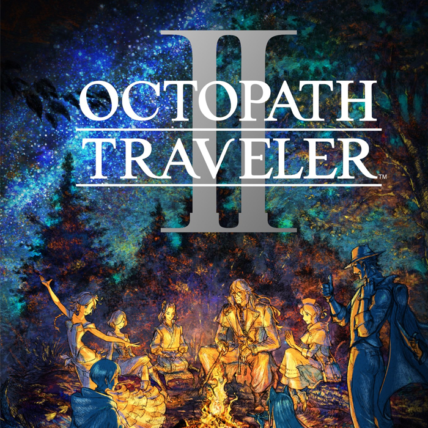
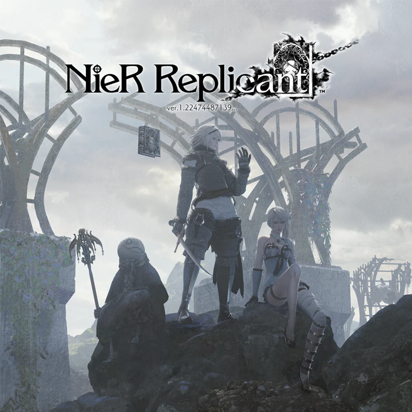
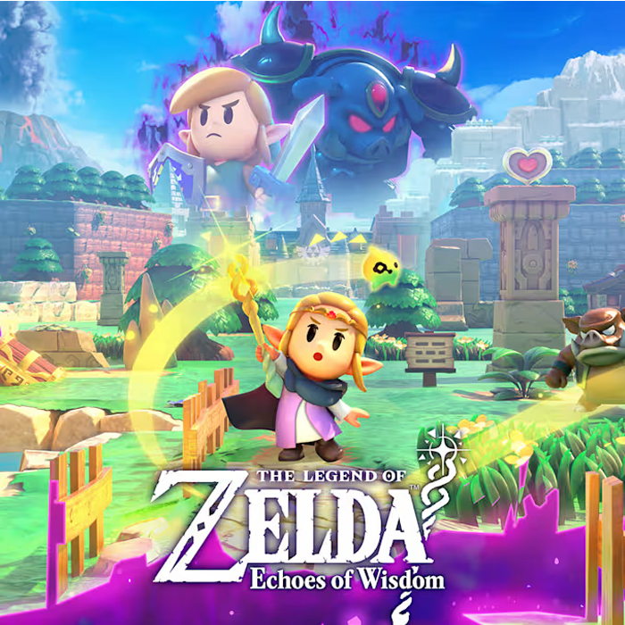
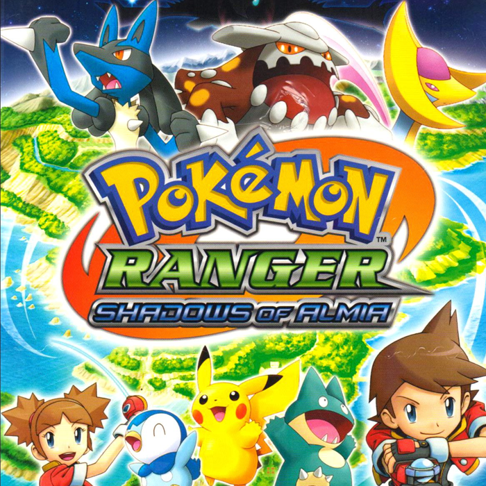
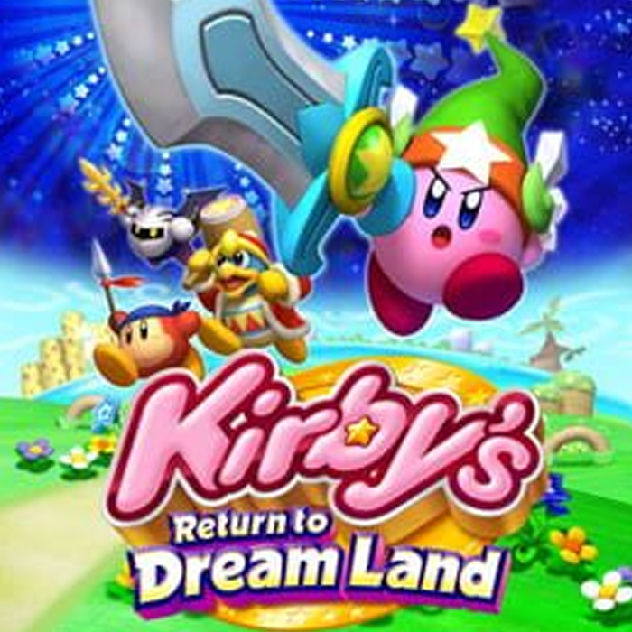

Hello!
My name is Nicole! I grew up playing mostly Pokemon and Kirby games, but I started to try playing other kinds of games during lockdown. I'm always looking for new games to play! I really like playing turn-based games the most.
Here are some of my favorite games!




